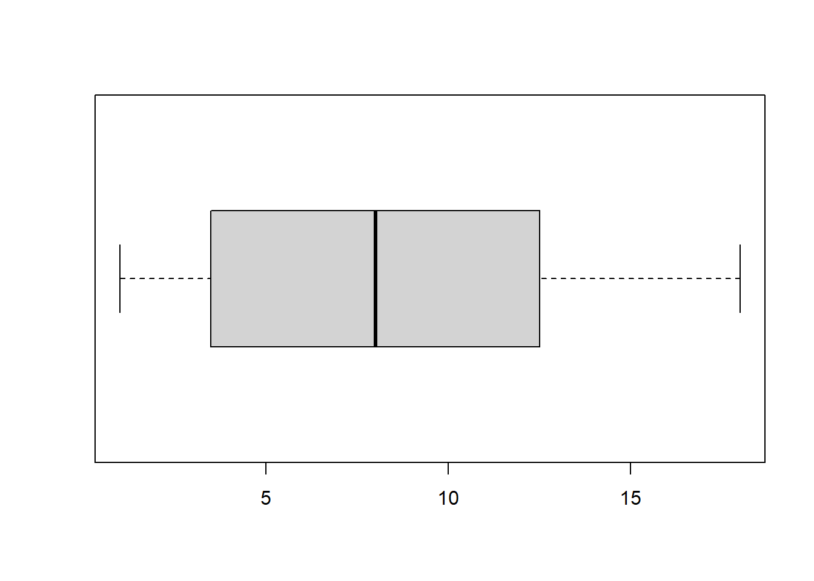
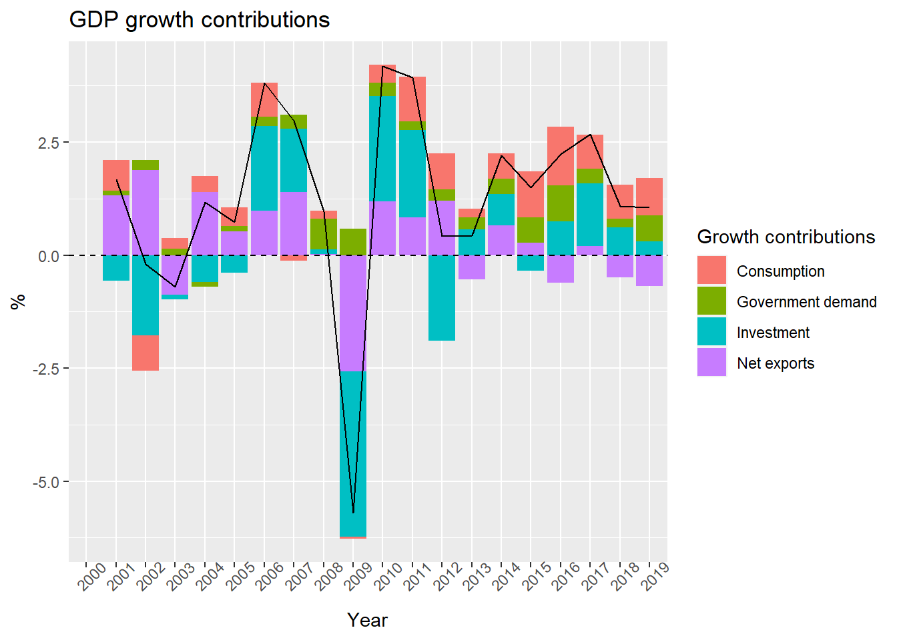

Chapter 5 Fundamental concepts in statistics
5.1 Mean and median
x <- c(3,5,2,6,5,9,5,2,8,5)
mean(x)## [1] 5median(x)## [1] 5## Find the weighted arithmetic mean
# Values of z
z <- c(70,90,85)
# Weights
wt <- c(1,1,3)
weighted.mean(z, wt)## [1] 83A percentile is a point in a distribution at which or below which a given proportion of data is found. The k-th percentile divides the data in a way that k-percent of the data lie below the percentile and (100 - k)-percent lie above the percentile. It is also common to hear about quantiles. Quantiles is a more generic terms which indicates values partitioning data in equally spaced groups. Specific types of quantiles are percentiles (see above), deciles, quartiles, etc.
a <- c(1,2,3,3,3,4,5,5,6,8,8,9,10,12,12,13,14,15,16,18)
# 1) Find the values existing at the Q_1, Q_2, Q_3 and Q_4, where Q stands for quartile
quantile(a, probs = c(0.25, 0.50, 0.75, 1))## 25% 50% 75% 100%
## 3.75 8.00 12.25 18.00# Do we obtain the same results using the nearest rank method?
# n = P / 100 * N
# n <- ordinal rank
# P <- percentile of interest
# N <- number of values in the set
# Q_1, Q_2, Q_3 and Q_4
P <- c(0.25, 0.50, 0.75, 1) * 100
N <- length(a)
# Ranks of the values at Q_1, Q_2, Q_3 and Q_4
n <- P / 100 * N
n## [1] 5 10 15 20# The values at the th percentile
a[n]## [1] 3 8 12 18# 2) the percentile of value 4 and value 15
percentile <- ecdf(a)
percentile(4)*100## [1] 30percentile(15)*100## [1] 90# Let's use again the nearest rank method instead of the in-built ecdf function
# P = n / N * 100
# Let's first find the rank (n) of the value 4 and 15 by looking at the original set
P_new <- c(6, 18) / N * 100
P_new## [1] 30 905.2 Boxplot
boxplot(a, horizontal = TRUE)
# Clear the workspace
rm(list = ls())
# Outliers in boxplots
# Data
a <- c(1,2,3,3,3,4,5,5,6,8,8,9,10,12,12,13,14,15,16,18)
b <- c(1,2,3,3,3,4,5,5,6,8,8,9,10,12,12,13,14,15,16,30)
# Plot the boxplot of a and b
boxplot(a, b,
names = c("a", "b"),
horizontal = TRUE)
# We define the boundaries for the identification of an outlier in the boxplot
lower_limit <- quantile(b, prob = 0.25) - 1.5 * IQR(b)
lower_limit## 25%
## -9upper_limit <- quantile(b, prob = 0.75) + 1.5 * IQR(b)
upper_limit## 75%
## 255.3 Expected value
# Clean the workspace
rm(list = ls())
# 2)
x <- c(6,5,6,3,1,5)
# Sample mean
mean(x)## [1] 4.333333# Expected value
die <- 1:6
E_die <- sum(die * rep(1/6,6))
E_die## [1] 3.5# 3)
pays <- c(0, 10, 0, 40, 0, -20)
E_pays <- sum(pays * rep(1/6,6))
# Expected pay of the game
E_pays## [1] 5# 4)
tickets <- 100000
pays_lottery <- c(5, 25, 100, 10000)
probabilities <- c(200/tickets, 20/tickets, 5/tickets, 1/tickets)
E_pays_lottery <- sum(pays_lottery * probabilities)
# Fair price for a ticket
E_pays_lottery## [1] 0.12Simulation of the expected value of the fair die/dice. This exercise is taken from the book Hands-On Programming with R by Garrett Grolemund.
roll_function <- function(nr_of_die) {
die <- 1:6
roll <- sample(die,
size = nr_of_die,
replace = TRUE,
prob = rep(1/6, 6))
sum_roll <- sum(roll)
return(sum_roll)
}
throws <- replicate(10000, roll_function(nr_of_die = 2))
qplot(throws,
binwidth = 1,
ylab = "Frequency",
xlab = "Numbers") +
geom_vline(aes(xintercept = mean(throws))) +
geom_text(aes(y = 500,
x = mean(throws),
label = mean(throws))) +
theme_minimal()
5.4 Variance
Find variance and standard deviation
b <- c(2, 5, 3, 1, 6, 3)
var(b)## [1] 3.466667sd(b)## [1] 1.861899sd(b) == sqrt(var(b))## [1] TRUE# 2) Add 10 to data
b_plus_10 <- b + 10
var(b_plus_10)## [1] 3.466667sd(b_plus_10)## [1] 1.861899# 3) Multiply data by 10
b_times_10 <- b * 10
var(b_times_10)## [1] 346.6667sd(b_times_10)## [1] 18.618995.5 Correlation
With this short exercise we want to see how the Pearson correlation coefficient is a measure of linear correlation between two variables.
x <- runif(100, min = 0, max = 10)
y <- sin(x) + rnorm(100, mean = 0, sd = 0.5)
plot(x,y)
abline(lm(y ~ x))
cor(x, y)## [1] -0.114539# The Pearson correlation coefficient is also symmetric
cor(x, y) == cor(x, y)## [1] TRUEcor.test(x, y)##
## Pearson's product-moment correlation
##
## data: x and y
## t = -1.1414, df = 98, p-value = 0.2565
## alternative hypothesis: true correlation is not equal to 0
## 95 percent confidence interval:
## -0.30411526 0.08376361
## sample estimates:
## cor
## -0.114539a <- runif(100, min = 0, max = 10)
b <- a + rnorm(100, mean = 0, sd = 1)
plot(a,b)
abline(lm(b ~ a))cor(a, b)## [1] 0.9506898cor.test(a, b)##
## Pearson's product-moment correlation
##
## data: a and b
## t = 30.345, df = 98, p-value < 2.2e-16
## alternative hypothesis: true correlation is not equal to 0
## 95 percent confidence interval:
## 0.9274585 0.9666102
## sample estimates:
## cor
## 0.9506898Programming challenge. Program a function that takes two inputs, x and y, and returns the correlation coefficient between x and y.
set.seed(12345)
x <- rnorm(100, mean = 0, sd = 1)
y <- rnorm(100, mean = 0, sd = 5)
my_corr_function <- function(a, b) {
numerator <- sum((x - mean(x)) * (y - mean(y)))
denominator <- sqrt(sum((x - mean(x))^2) * sum((y - mean(y))^2))
correl <- numerator / denominator
return(correl)
}
my_corr_function(a = x, b = y)## [1] 0.1042097cor(x,y)## [1] 0.10420975.6 Covariance
Find covariance and Pearsons correlation coefficient between the variables \(X\) and \(Y\).
X <- c(2, 1, 3)
Y <- c(10, 30, 50)
cov(X, Y)## [1] 10cor(X, Y)## [1] 0.55.7 Expected value, variance and covariance rules
Expected value
The of a (discrete) random variable is the arithmetic mean of that variable where each value is weighted by its probability. It can also be thought as the long-run average for any random variable over an indefinite number of trials. For a discrete random variable X having the possible values \(x_1, \dots, x_N\) the expectation of X is defined as:
\[ E(X) = x_1P(X=x_1) + \dots + x_NP(X=x_N) = \sum\limits_{i=1}^{N} x_iP(X = x_i) = \sum\limits_{i=1}^{n} x_ip_{i}\]
The expected value of a random variable can be also understood as the population mean, \(E(X) = \mu_x\) or simply \(\mu\). With equals weights, the formula for the expected value will be equal to the formula for the arithmetic average. Similarly, the expected value of functions of discrete random variables is given by the following:
\[ E\{g(X)\} = g(x_1)p_1 + \dots + g(x_N)p_N = \sum\limits_{i=1}^{N} g(x_i)p_i\]
Rule 1
The expected value of a constant, for example , is that constant
\[\begin{align} E(b) = b \end{align}\]
This rule can be easily understood following the rules of the summation operator.
\[\begin{align} E(b) & = \dfrac{1}{N}\sum_{i=1}^{N}b \nonumber \\ & = \dfrac{1}{N}Nb \nonumber \\ & = b \nonumber \end{align}\]
Rule 2
If \(X\) is a random variable and \(b\) is a constant then,
\[\begin{align} E(bX) = bE(X) \end{align}\]
Again, using the rules of the summation operator and substituting back the population mean \(\mu_x\) (remember that \(E(X) = \mu_x\)):
\[\begin{align} E(bX) & = \dfrac{1}{N}\sum_{i=1}^{N}x_{i}b \nonumber\\ & = b\dfrac{1}{N}\sum_{i=1}^{N}x_{i} \nonumber\\ & = b\mu_x \nonumber \\ & = bE(X) \nonumber \end{align}\]
Rule 3
The expected value of the sum of several variables is the sum of the expected values. If X, Y, and Z are three random variables, then,
\[\begin{align} E(X + Y + Z) = E(X) + E(Y) + E(Z) \end{align}\]
The rules of the sigma operator can be applied also to this case.
\[\begin{align} E(X + Y + Z) & = \dfrac{1}{N}\sum_{i=1}^{N}(x_{i} + y_{i} + z_{i}) \nonumber\\ & = \dfrac{1}{N}\sum_{i=1}^{N}x_{i} + \dfrac{1}{N}\sum_{i=1}^{N}y_{i} + \dfrac{1}{N}\sum_{i=1}^{N}z_{i} \nonumber\\ & = \mu_x + \mu_y + \mu_z \nonumber\\ & = E(X) + E(Y) + E(Z) \nonumber \end{align}\]
Note also that \(E(X^2) \neq [E(X)]^2\) and that for non-linear functions \(E[g(X)] \neq g[E(X)]\). and can be seen with simple numerical examples. This is left as an exercise.
Covariance
The population between two random variables X and Y \(cov(X,Y)\) is defined as the expected value of the product of the deviation of the variables from their respective means.
\[\begin{align} cov(X,Y) & = E\{(X-\mu_x)(Y-\mu_y)\} \\ & = E[XY - \mu_xY - \mu_yX + \mu_y\mu_x]\nonumber\\ & = E(XY) - \mu_xE(Y) - \mu_y(X) + E(\mu_x\mu_y)\nonumber\\ & = E(XY) - \mu_x\mu_y - \mu_y\mu_x + \mu_x\mu_y\nonumber\\ & = E(XY) - \mu_x\mu_y\nonumber\\ & = E(XY) - E(X)E(Y)\nonumber \end{align}\]
On the contrary, two random variables \(X\) and \(Y\) are said to be independent if \(cov(X,Y) = 0\). Only in this case,
\[\begin{align} E(XY) = E(X)E(Y) \end{align}\]
Rule 1
If \(Y = V + W\), then,
\[\begin{align} cov(X, Y) = cov(X, V) + cov(X, W) \end{align}\]
PROOF for Rule 1:
\[\begin{align} cov(X,Y) & = E\{(X - \mu_x)(Y - \mu_y)\} \nonumber \\ & = E\{(X - \mu_x)([V + W] - [\mu_v + \mu_w])\} \nonumber \\ & = E\{(X - \mu_x)(V - \mu_v) + (X - \mu_x)(W - \mu_w)\}\nonumber \\ & = cov(X, V) + cov(X, W)\nonumber \end{align}\]
Rule 2
If \(Y = bZ\), where is a constant and a random variable, then,
\[\begin{align} cov(X, Y) = b\cdot cov(X, Z) \end{align}\]
PROOF for Rule 2
\[\begin{align} cov(X,Y) & = E\{(X - \mu_x)(Y - \mu_y)\}\nonumber \\ & = E\{(X - \mu_x) (bZ - b\mu_z)\}\nonumber \\ & = bE\{(X - \mu_x) (Z - \mu_z)\}\nonumber \\ & = bcov(X,Z)\nonumber \end{align}\]
Rule 3
If \(Y = b\), where is a constant, then,
\[\begin{align} cov(X, Y) = 0 \end{align}\]
PROOF for Rule 3:
\[\begin{align} cov(X,Y) & = E\{(X - \mu_x)(Y - \mu_y)\}\nonumber \\ & = E\{(X - \mu_x) (b - b)\}\nonumber \\ & = E\{0\}\nonumber \end{align}\]
Variance
The population of a random variable \(X\) can be understood as a measure of the dispersion of its probability distribution. It is defined as the expected (or average) squared deviation of its values from the mean.
\[\begin{align} var(X) & = E\{(X - \mu_x)^2\}\nonumber \\ & = E(X^2 - 2\mu_xX + \mu_{X}^{2})\nonumber \\ & = E(X^2) + E(-2\mu_xX) + E(\mu_{X}^{2})\nonumber \\ & = E(X^2) - 2\mu_xE(X) + \mu_{X}^{2}\nonumber \\ & = E(X^2) - 2\mu_x\mu_x + \mu_{X}^{2}\nonumber \\ & = E(X^2) - \mu_x^{2}\nonumber \end{align}\]
We can also think of a random variable \(X\) composed of two entities, the population mean \(\mu_x\) and a disturbance term or random component \(u\).
\[\begin{align} X = \mu_x + u \hspace{1cm}\text{from which it follows that}\hspace{1cm} u = X - \mu_x \end{align}\]
We can show that the expected value of \(u\) is zero and that the variance of X is the same as the variance of \(u\). In other words, the variance of X solely depends on the variance of \(u\) and not of its mean (!).
\[\begin{align} E(u) = E(X - \mu_x) = E(X) + E(- \mu_x) = \mu_x - \mu_x = 0 \end{align}\]
We know that,
\[\begin{align} var(X) = E\{(X - \mu_x)^2\} = E(u^2) \end{align}\]
and,
\[\begin{align} var(u) = E\{(u - \text{mean of}\hspace{0.1cm} u)^2 \} = E\{(u - 0)^2 \} = E(u^2) \end{align}\]
therefore,
It is also useful and pretty straight forward to note that the variance of a random variable \(X\) can be thought of the covariance of \(X\) with itself:
\[\begin{align} var(X) & = E\{(X - \mu_x)^2\}\nonumber \\ & = E\{(X - \mu_x)(X - \mu_x)\}\nonumber \\ & = cov(X, X)\nonumber \end{align}\]
Rule 1
If \(Y = V + W\), then,
\[\begin{align} var(Y) = var(V) + var(W) + 2cov(V, W) \end{align}\]
PROOF for Rule 1:
\[\begin{align} var(Y) & = cov(Y,Y) \nonumber \\ & = cov(Y,[V + W]) \nonumber \\ & = cov(Y,V) + cov(Y,W) \nonumber \\ & = cov(V,[V + W]) + cov([V + W],W) \nonumber \\ & = cov(V,V) + cov(W,V) + cov(V,W) + cov(W,W) \nonumber \\ & = var(V) + var(W) + 2cov(V, W) \nonumber \\ \end{align}\]
Rule 2
If \(Y = bZ\), where \(b\) is a constant, then,
\[\begin{align} var(Y) = b^2var(Z) \end{align}\]
PROOF for Rule 2:
\[\begin{align} var(Y) & = cov(Y,Y)\nonumber \\ & = cov(bZ,Y)\nonumber \\ & = bcov(Z,Y)\nonumber \\ & = bcov(Z,bZ)\nonumber \\ & = b^2cov(Z,Z)\nonumber \\ & = b^2var(Z)\nonumber \end{align}\]
Rule 3
If \(Y = b\), where \(b\) is a constant, then,
\[\begin{align} var(Y) = 0 \end{align}\]
PROOF for Rule 3:
\[\begin{align} var(Y) & = cov(b,b)\nonumber \\ & = 0 \nonumber \end{align}\]
Rule 4
If \(Y = V + b\), where \(b\) is a constant, then,
\[\begin{align} var(Y) = var(V) \end{align}\]
PROOF for Rule 4:
\[\begin{align} var(Y) & = var(V + b) \nonumber \\ & = var(V) + var(b) + 2cov(V,b)\nonumber \\ & = var(V) \nonumber \\ \end{align}\]